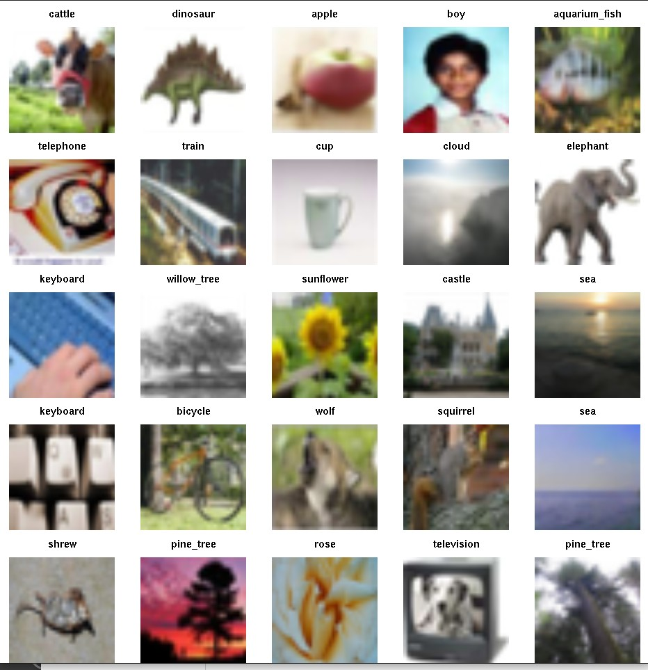

vignettes/littleDeep.Rmd
littleDeep.RmdThe purpose of this package is to focus on a little bit of material presented in James et al. Introduction to Statistical Learning with R (ISLR).
We want to think about the old approach to statistical modeling
Data = Fit + Residualbut now the Data are

and it is not particularly clear what Fit and Residual might be.
The code of a keras-based model is given among the resources for ISLR
model <- keras_model_sequential() %>%
layer_conv_2d(filters = 32, kernel_size = c(3, 3),
padding = "same", activation = "relu",
input_shape = c(32, 32, 3)) %>%
layer_max_pooling_2d(pool_size = c(2, 2)) %>%
layer_conv_2d(filters = 64, kernel_size = c(3, 3),
padding = "same", activation = "relu") %>%
layer_max_pooling_2d(pool_size = c(2, 2)) %>%
layer_conv_2d(filters = 128, kernel_size = c(3, 3),
padding = "same", activation = "relu") %>%
layer_max_pooling_2d(pool_size = c(2, 2)) %>%
layer_conv_2d(filters = 256, kernel_size = c(3, 3),
padding = "same", activation = "relu") %>%
layer_max_pooling_2d(pool_size = c(2, 2)) %>%
layer_flatten() %>%
layer_dropout(rate = 0.5) %>%
layer_dense(units = 512, activation = "relu") %>%
layer_dense(units = 100, activation = "softmax")To compile, fit, and record the optimization processes of fitting the model, the code is
model %>% compile(loss = "categorical_crossentropy",
optimizer = optimizer_rmsprop(), metrics = c("accuracy"))
history <- model %>% fit(x_train, y_train, epochs = 10,
batch_size = 128, validation_split = 0.2)The Rmd and book report the accuracy of this approach at 46%
The purpose of this package is to help newcomers (like me) explore this approach to statistical learning. I’m particularly interested in how we can tune the model, appraise its performance in a comparative context, accelerate the fitting using a GPU, and measure the activity of the GPU as it does its job. We’ll eventually produce dockerfiles to help with the GPU-related activities, as it can be challenging to configure the drivers and software to take advantage of GPUs.
At the end of April 2023 I noted that the authors of ISLR provide a new torch-based approach. The code is now
conv_block <- nn_module(
initialize = function(in_channels, out_channels) {
self$conv <- nn_conv2d(
in_channels = in_channels,
out_channels = out_channels,
kernel_size = c(3,3),
padding = "same"
)
self$relu <- nn_relu()
self$pool <- nn_max_pool2d(kernel_size = c(2,2))
},
forward = function(x) {
x %>%
self$conv() %>%
self$relu() %>%
self$pool()
}
)
model <- nn_module(
initialize = function() {
self$conv <- nn_sequential(
conv_block(3, 32),
conv_block(32, 64),
conv_block(64, 128),
conv_block(128, 256)
)
self$output <- nn_sequential(
nn_dropout(0.5),
nn_linear(2*2*256, 512),
nn_relu(),
nn_linear(512, 100)
)
},
forward = function(x) {
x %>%
self$conv() %>%
torch_flatten(start_dim = 2) %>%
self$output()
}
)
model()Compile, fit and evaluate with
fitted <- model %>%
setup(
loss = nn_cross_entropy_loss(),
optimizer = optim_rmsprop,
metrics = list(luz_metric_accuracy())
) %>%
set_opt_hparams(lr = 0.001) %>%
fit(
train_ds,
epochs = 10, #30,
valid_data = 0.2,
dataloader_options = list(batch_size = 128)
)
print(fitted)
evaluate(fitted, test_ds)This Rmd reports the accuracy at 36%.
To “get started” you can install littleDeep using devtools::install_github("vjcitn/littleDeep", dependencies=TRUE), and run the code in the “article” entitled “Deep Learning excursion 0”.